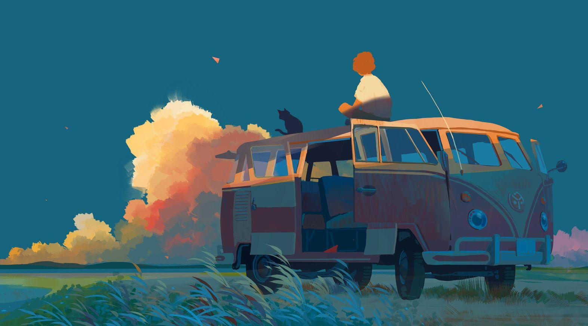

其实也没啥事，不就是上学吗，不就是生活吗，人活着哪有不疯的时候，不疯的人还活着吗。人又不是葱姜蒜西瓜茄子萝卜芒果猕猴桃。可能我是猴子呢！我是猴子！哈！嘿！吼！哈哈哈哈哈哈哈哈哈哈哈哈哈我是猴子，我不用学习的（变成猿猴）（抢夺路人的香蕉）（飞入丛林）（在藤蔓中荡来荡去）（在藤蔓中荡来荡去）（在藤蔓中荡来荡去）（在藤蔓中荡来荡去）（高声吼叫）（高声吼叫）（在藤蔓中荡来荡去）（高声吼叫）（在藤蔓中荡来荡去）（高声吼叫）（在藤蔓中荡来荡去）
不爱姐没关系，姐回大润发杀鱼了（挑选幸运儿鱼）（掂一掂）（拿起刀）（拍晕）（刮鱼鳞）（挖内脏）（有点被腥到）（把鱼鳃抠出来）（yue）（去掉鱼腥线）（露出满意的微笑）（把塑料袋展开）（把鱼装进去）（用秤称）（诶您的鱼好了）（递给客人）（手在围裙上擦擦）（清洗和我的心一样冰冷的砧板）
地球没了我，是不会转的.我直接崩溃大哭，扇自己耳光，然后一个后空翻翻到面试官旁边，
接着哈哈哈哈哈哈大笑，最后我把裤子脱下来疯狂串稀，我追着他屁股啃啃啃啃啃啃啃啃啃啃啃啃，我疯狂大叫，我啃他脸，啃他屁股，我边啃边拉屎（阳光且健康地跑步）（三分投球）（七彩广播体操）（跳舞）（随风飘荡）（胸口无不适）（精神振奋）（食欲大增）（脚步轻盈）（温柔）（暖心）（宁静）（热爱生活）（清风徐来）（亢奋）（奋发图强）（强身健体）（体内有热流涌动）（上房揭瓦）（跳舞）（冲出银河系）（有劲儿）（扭曲爬行）（阳光且健康地跑步）（三分投球）（七彩广播体操）（跳舞）（随风飘荡）（胸口无不适）（精神振奋）（食欲大增）
（阴森的低吼）（爬行）（分裂）（走上岸）（扭动）（痉挛）（蠕动）（扭曲的行走）（不分对象攻击）（打出高额元素损伤）（闪避）（闪避）（闪避）（闪避）（闪避）（闪避）（闪避）（闪避）（闪避）（闪避）发疯怎么了？大家都会死的，装正常给谁看？发疯怎么了？大家都会死的，装正常给谁看？发疯怎么了？大家都会死的，装正常给谁看？发疯怎么了？大家都会死的，装正常给谁看？发疯怎么了？大家都会死的，装正常给谁看？发疯怎么了？大家都会死的，装正常给谁看？发疯怎么了？大家都会死的，装正常给谁看？(在地上像史莱姆一样爬行)(在地上像史莱姆一样爬行)(在地上像史莱姆一样爬行)(在地上像史莱姆一样爬行)(在地上像史莱姆一样爬
百度 该死的四级 另一个页面aaaaaaaaaaaaa